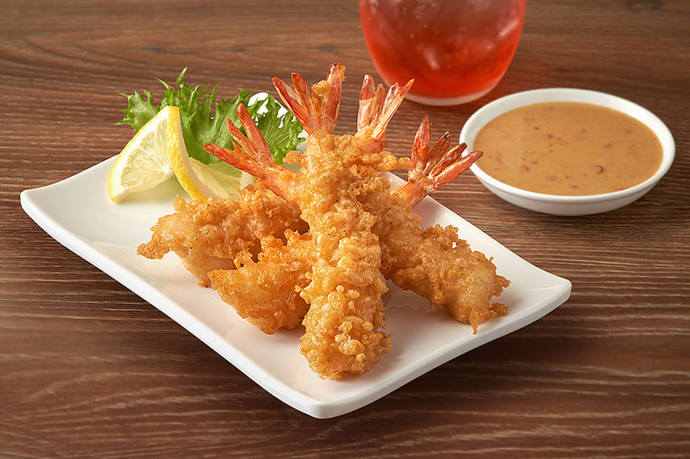
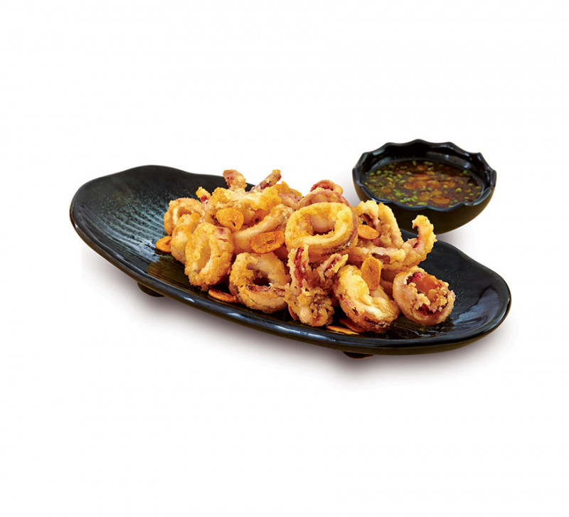
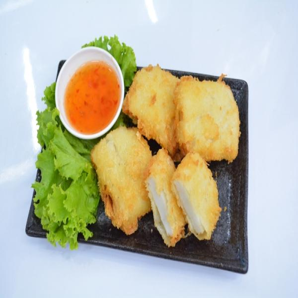
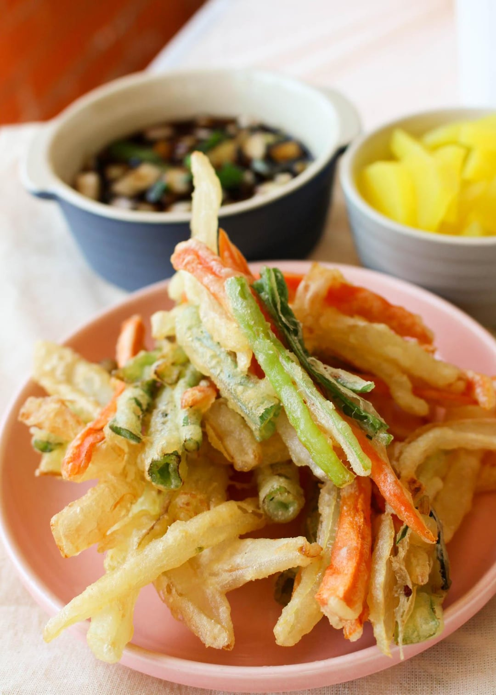

เทมปุระกุ้ง
อาหารที่ทำสุดแสนจะง่าย แต่จะทำให้อร่อยได้ ก็ต้องรู็จักการทำเบื้องต้น

เทมปุระหมึก
สำหรับคนที่แพ้กุ้งสามารถทำได้อร่อยไม่แพ้กุ้ง หรือคนที่สนใจการนำปลาหมึกมาทำเทมปุระ ซึ่งวิธีทำง่ายอร่อย

เทมปุระปลา
อร่อยวิธีทำที่สุดแสนจะง่าย กรอบ หอมเนื้อปลา มือใหม่ก็สามารถทำตามได้ง่าย

เทมปุระผัก
ที่สามารถทำให้เด็กๆ หรือคนที่คุณรักทานได้ หรือคนที่เพิ่งเริ่มทานผัก ก็สามารถทำตามได้ง่ายๆ

แจกสูตรเทมปุระและเคล็ดลับความอร่อย
เทมปุระคือเมนูชุบแป้งทอดของญี่ปุ่น เทมปุระที่อร่อยคือเทมปุระที่กรอบกำลังดี... ปลาหมึก
ปลาหมึก เป็นอาหารที่เหมาะกับการทำเทมปุระมาก เพราะสุกเร็วมาก ปลาหมึกต้องสุกเร็วมาก หรือไม่ก็สุกช้าๆ และไฟอ่อนๆ ก็ได้ ปลาหมึกจะเหนียวและเหนียวนุ่ม... เทมปุระปลา (白身魚の天ぷら)
คือปลาเนื้อขาวชุบแป้งเทมปุระ เนื้อสัมผัสเบาสบายแม้จะทอดจนกรอบ แม้แต่คนที่ไม่ชอบทานของหนักๆ ก็ชอบ ทำเองที่บ้านได้ไม่ยากถ้าทำตามเคล็ดลับสองสามข้อ... เทมปุระผัก
นี้มีชื่อว่า คาคิอาเกะที่อุดมไปด้วยสารอาหาร ที่มีรสชาติอูมามิเป็นเทมปุระผักสไตล์ญี่ปุ่น... อุปกรณ์ต่างๆ ที่ใช้ในการทำ
หม้อทอดไฟฟ้า กระทะทอด
ตะหลิว ไว้ทอดกับกระทะ
มีด สำหรับหั่นผัก หั่นกุ้ง หั่นปลาหมึก
เขียงไว้รองหั่นผัก ปลา กุ้ง หมึก
ตะแกรงกรองน้ำมัน
กระดาษซับน้ำมัน
ที่คีบอาหาร รูปแบบต่าง ๆ
เตาแก๊ส เตาไฟสำหรับก่อ (ควบคุมอุณหภูมิไฟค่อนข้างยาก)
ชาม ไว้ผสมอาหาร
แจกสูตรเทมปุระและเคล็ดลับความอร่อย
เทมปุระคือเมนูชุบแป้งทอดของญี่ปุ่น เทมปุระที่อร่อยคือเทมปุระที่กรอบกำลังดี...
ปลาหมึก เป็นอาหารที่เหมาะกับการทำเทมปุระมาก เพราะสุกเร็วมาก ปลาหมึกต้องสุกเร็วมาก หรือไม่ก็สุกช้าๆ และไฟอ่อนๆ ก็ได้ ปลาหมึกจะเหนียวและเหนียวนุ่ม...
เทมปุระปลา (白身魚の天ぷら) คือปลาเนื้อขาวชุบแป้งเทมปุระ เนื้อสัมผัสเบาสบายแม้จะทอดจนกรอบ แม้แต่คนที่ไม่ชอบทานของหนักๆ ก็ชอบ ทำเองที่บ้านได้ไม่ยากถ้าทำตามเคล็ดลับสองสามข้อ...
เทมปุระผัก นี้มีชื่อว่า คาคิอาเกะที่อุดมไปด้วยสารอาหาร ที่มีรสชาติอูมามิเป็นเทมปุระผักสไตล์ญี่ปุ่น...
เทมปุระ (天ぷら - Tempura) เมนูชุบแป้งทอดยอดนิยมและแสนอร่อยที่ทุกคนสามารถเลือกทานได้ตามร้านอาหารญี่ปุ่นทั่วไปตลอดจนร้านระดับมิชลินสตาร์ ความพิเศษของเมนูนี้สามารถเทียบเคียงกับซูชิได้เลย เป็นต้น
ซึ่งปัจจุบันเทมปุระมีการดัดแปลงหลากหลายรูปแบบที่แตกต่างกันไปตามภูมิภาคของญี่ปุ่น เช่น เทนด้ง เทมปุระโซบะ เทมปุระอุด้ง คาคิอาเกะ และอื่นๆ
เราจะพาทุกคนย้อนความไปรู้จักกับเทมปุระในสมัยเอะโดะ(ช่วงปลายศตวรรษที่ 16) ว่าเมนูนี้มีความเป็นมาอย่างไรและอะไรที่ทำให้เทมปุระเป็นอีกหนึ่งเมนูที่ยอดนิยม เลื่อนลงไปอ่านกันเลย
ในช่วงปลายศตวรรษที่ 16 (สมัยเอโดะ) มีพ่อค้าชาวโปรตุเกสท่านหนึ่งที่ได้รับการอนุญาตให้ทำธุรกิจในญี่ปุ่น โดยพ่อค้าคนนี้ได้นำการทำอาหารสไตล์ตะวันตกเข้ามา ด้วยการนำอาหารไปชุบแป้งทอด อาทิ อาหารทะเล ผักและเห็ด เป็นต้น
โดยอาหารที่นำไปชุบแป้งทอดมีชื่อเรียกว่า Peixinhos da horta (garden fishies) ทั้งนี้ทั้งนั้นแหล่งกำเนิดของเทมปุระไม่ทราบที่มาอย่างชัดเจนบางแหล่งก็บอกว่ามาจากภาษาละติน(Tempora)ที่มีความหมายว่า การถือศีลอด
เป็นคำที่ใช้ในช่วงการถือศีลอดในวันศุกร์และวันสำคัญทางศาสนาต่างๆของชาวคริสเตียน ซึ่งในช่วงเวลาเหล่านั้นพวกเขาจะหันมารับประทานปลาหรือผักแทนการกินเนื้อแดง หรือบางแหล่งก็บอกว่าเพี้ยนว่าจากคำว่า เทมโปโร(Tempero)
ที่มีความหมายว่าเครื่องเทศหรือเครื่องปรุงรสชนิดหนึ่งในประเทศโปรตุเกส โดยการรับประทานเทมปุระมักจะทานคู่กับน้ำจิ้มเทนซึยุ(Ten-tsuyu) จิ้มเกลือ(ผสมเครื่องเทศอื่นๆอย่างมัทฉะหรือซันโช)หรือทานเดี่ยวๆไม่ต้องจิ้มอะไรเลยก็อร่อย
แต่การรับประทานเทมปุระนั้นมีสิ่งที่ควรระวังอยู่ คือในภาชนะที่เสิร์ฟเทมปุระนั้นจะมีผักและอาหารทะเลตัวเล็กฝอย รสชาติเบาและทานสะดวกจะถูกจัดวางให้อยู่ด้านหน้า ส่วนพวกปลาหรือกุ้งที่เป็นชิ้นใหญ่จะถูกจัดวางไว้ด้านหลังเพราะมีรสชาติที่เข้มข้น
ฉะนั้นการทานเทมปุระจากด้านหน้าจะทำลิ้มรสชาติของเทมปุระได้ดีมากยิ่งขึ้นนั่นเอง นอกจากนี้ เมนูเทมปุระยังเป็นเมนูสุขภาพอีกเมนูหนึ่งของญี่ปุ่น เพราะเทมปุระนั้นใช้น้ำมันงาในการทอดเพื่อขจัดกลิ่นคาวปลา เมนูเรียบง่ายที่พิถีพิถันขนาดนี้สมกับเป็นเมนูขวัญใจของชาวญี่ปุ่นจริงๆ
ปลาหมึก เป็นอาหารที่เหมาะกับการทำเทมปุระมาก เพราะสุกเร็วมาก ปลาหมึกต้องสุกเร็วมาก หรือไม่ก็สุกช้าๆ และไฟอ่อนๆ ก็ได้ ปลาหมึกจะเหนียวและเหนียวนุ่มแป้งค่อนข้างเบาและทอดจนกรอบนอกนุ่มใน
ที่แปลกก็คือ มันเบา หรืออย่างน้อยก็เบากว่าแป้งข้าวโพดเคลือบหนาๆ ที่มักพบในขนมปังอิตาลีทั่วไป
เทมปุระ คืออาหารญี่ปุ่นที่ชุบแป้งทอดกรอบ มักเป็นผักและอาหารทะเล ดูเหมือนว่าวิธีการนี้ได้รับการแนะนำเข้าสู่ญี่ปุ่นโดยชาวโปรตุเกสในช่วงคริสต์ศตวรรษที่ 16
ดังนั้น การทอดอย่างรวดเร็วในแป้งเทมปุระจึงเหมาะอย่างยิ่งสำหรับปลาหมึก แน่นอนว่าหากคุณต้องการใช้อาหารทะเลชนิดอื่น คุณสามารถใช้แป้งนี้กับกุ้ง กุ้งมังกร หอยนางรม หอยลาย ปลาตัวเล็ก หรือปลาตัวใหญ่ๆ ได้
หรือคุณจะเลี่ยงอาหารทะเลไปเลยแล้วผัดแค่ผักบางชนิด เช่น แครอทหั่นเป็นเส้นหรือดอกบร็อคโคลีแทนก็ได้
เคล็ดลับคือ
รักษาอุณหภูมิน้ำมันให้เหมาะสม ถ้าร้อนเกินไปอาหารจะไหม้ ถ้าเย็นเกินไปอาหารจะเยิ้ม และทอดอย่างรวดเร็วแต่ยังคงรักษาความเย็นของแป้งไว้น้ำมันถั่วลิสงหรือน้ำมันคาโนลาสำหรับทอด
ปลาหมึกที่ตัดจากตัวจะทอดง่ายกว่าหนวดซึ่งมักจะเกาะกันเป็นก้อน ถ้ามีทั้งสองอย่าง ให้ทอดวงแหวนก่อน แล้วค่อยทอดหนวดอย่าทำซ้ำสูตรสองเท่า แป้งต้องเก็บให้เย็นและใช้ทันทีหลังจากทำเสร็จ ดังนั้นควรทำทีละน้อยจะดีกว่าหากคุณต้องการทำเพิ่ม
ให้ผสมส่วนผสมชุดที่สองเข้าด้วยกันหลังจากทำส่วนผสมชุดแรกเสร็จแล้ว
เทมปุระปลา (白身魚の天ぷら) คือปลาเนื้อขาวชุบแป้งเทมปุระ เนื้อสัมผัสเบาสบายแม้จะทอดจนกรอบ แม้แต่คนที่ไม่ชอบทานของหนักๆ ก็ชอบ ทำเองที่บ้านได้ไม่ยากถ้าทำตามเคล็ดลับสองสามข้อ
สามารถใช้ปลาชนิดใดก็ได้ตามต้องการ แต่ต้องแน่ใจว่าได้เอาความชื้นส่วนเกินออกจากปลาแล้วปลาหลายชนิดในปัจจุบันถูกแช่แข็งมาก่อนแล้ว และเมื่อละลายแล้วจะเหลวเป็นน้ำ ความชื้นนี้จะส่งผลต่อเนื้อสัมผัสของแป้งทอดเมื่อทอดจนสุก
เพื่อดูดซับความชื้น ให้ห่อปลาด้วยกระดาษทิชชู่สักสองสามชั่วโมง หรืออาจข้ามคืนหากมีเวลาสำหรับแป้งทอด ควรใช้แป้งที่มีโปรตีนน้อย
เคล็ดลับที่เป็นประโยชน์เกี่ยวกับการทำเทมปุระผัก เตรียมทุกอย่างไว้ล่วงหน้าหั่นผัก ลวกผักที่ต้องการ เทมปุระสุกเร็วมากและไม่เหลืองกรอบผักไม่ควรใช้เวลาปรุงนานเกิน 3 นาที
ย่ารอให้แป้งเป็นสีเหลืองทอง (แบบไก่ทอด) ไม่เช่นนั้นอาหารจะสุกเกินไป เทมปุระที่สุกดีจะมีสีอ่อนและกรอบมาก เก็บเทมปุระที่สุกแล้วให้กรอบและร้อนอยู่เสมอโดยเก็บไว้ในเตาอบที่อุ่นไว้ก่อนแล้วไม่จำเป็นต้องรีบร้อนและปรุงทุกอย่างในคราวเดียว!
อุ่นเตาอบที่อุณหภูมิ 250°F (120°C) เตรียมถาดอบโดยปูด้วยกระดาษทิชชู่และตะแกรงระบายความร้อน การวางเทมปุระทอดบนตะแกรงจะช่วยให้เทมปุระกรอบและยังคงร้อนในเตาอบได้ดีขณะที่คุณปรุงอาหารส่วนที่เหลือ
คุณยังสามารถเตรียมเทมปุระล่วงหน้า (หรือเก็บส่วนที่เหลือไว้) โดยปล่อยให้เย็นสนิทบนตะแกรง แล้วเก็บไว้ในภาชนะที่ปิดสนิทในตู้เย็น การอุ่นซ้ำ ให้วางบนตะแกรงในถาดอบ (โดยไม่ใช้กระดาษทิชชู่) แล้วอุ่นอย่างช้าๆ ที่อุณหภูมิ 325°F (165°C) เป็นเวลา 5-8 นาที
พลิกทุกชิ้นเพื่อให้แน่ใจว่าเทมปุระร้อนทั่วถึงและกรอบ
เทมปุระ
คือเมนูชุบแป้งทอดของญี่ปุ่น เทมปุระที่อร่อยคือเทมปุระที่กรอบกำลังดี ไม่แข็งไป ไม่เหนียวไป ไม่อมน้ำมัน มีวิธีทำดังนี้
วัตถุดิบที่ต้องมี
1. กุ้งขาว
2. แป้งสาลี
3. ไข่ไก่
4. น้ำเย็น
วิธีทํา
1. รียมกุ้ง ให้ล้างทำความสะอาดกุ้งให้สะอาด เด็ดหัวกุ้งและแกะเปลือกกุ้งออก
ให้เหลือแต่ส่วนหางไว้หนึ่งข้อ เด็ดหางกุ้งที่แหลมๆออกจะได้ไม่ทิ่งปากตอนทาน เส้นสีดำๆตรงหลังกุ้งให้ใช้ไม้จิ้มฟันงัดแล้วดึงออกมา หั่นกลางลำตัวกุ้ง
เป็นแนวเฉียงหันหน้ากุ้งลงเขียวแล้วกดลงไปให้มีเสียงกร๊อบจนหมดทั้งตัว เมื่อเวลาไปทอดกุ้งจะเหยียดตรงสวย
2. เตรียมแป้ง ตวงแป้งทอดกรอบ 1 ส่วน ตามด้วยแป้งสาลี 1 ส่วน พักแป้งไว้ การใช้แป้งสาลีผสมจะทำให้เทมปุระนุ่มฟู กรอบอร่อย
3. ตอกไข่ไก่ใส่ถ้วย ตวงน้ำเย็นใส่ลงไป 2 ส่วน ตีผสมให้ไข่ไก่กับน้ำเข้ากัน จะช่วยให้แป้งไม่แข็งกระด้าง
นำไข่ไก่กับน้ำที่เพิ่งผสมกันเมื่อครู่เทใส่แป้งที่เตรียมไว้ ขากนั้นผสมอย่างเบามือให้แป้งละลาย ไม่ควรคนนาน เพราะจะทำให้แป้งหนัก ไม่ฟูกรอบ เทคนิคคือต้องรักษาอุณหภูมิให้เย็นของแป้งที่ผสมไว้ โดยใส่น้ำเย็นหรือน้ำแข็งมารองถ้วยที่ใส่แป้งเอาไว้อีกที
4. เตรียมกระทะก้นลึก หรือหม้อก้นลึกสำหรับทอด ใส่น้ำมันให้เยอะ ใช้ไฟปานกลาง ริให้น้ำมันเดือดแล้วจึงนำกุ้งที่ชุบแป้งลงไปทอด เมื่อแป้งเปลี่ยนเป็นสีเหลือง ให้นำกุ้งมาสะเด็ดน้ำมัน
5. จัดเทมปุระใส่จาน เสร็จแล้วพร้อมทานได้เลย "เสริมคู่กับหัวไชเท้าข฿ดฝอยกับน้ำจิ้ม จะอร่อยมาก
ปลาหมึก
เป็นอาหารที่เหมาะกับการทำเทมปุระมาก เพราะสุกเร็วมาก ปลาหมึกต้องสุกเร็วมาก หรือไม่ก็สุกช้าๆ และไฟอ่อนๆ ก็ได้ ปลาหมึกจะเหนียวและเหนียวนุ่ม
แป้งค่อนข้างเบาและทอดจนกรอบนอกนุ่มใน